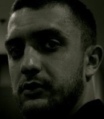

Petak, 20. veljače
Otvorenost vlasti i javnih podataka kao jačanja transparentnosti put su prema dobroj vladavini, a slobodan pristup podacima u novoj digitalnoj eri lakše je i jeftinije omogućiti više nego ikada prije, kroz različite online platforme i aplikacije koje građanima pružaju mogućnost za komentiranje i dijeljenje informacija o podacima tijela javnih vlasti i načinima njihovog korištenja.
Twitaj s hashtagom #CodeAcrossHR i gledaj WallOfTweets.
Twitaj s hashtagom #OpenDataPrioritet i predloži setove podataka koje želiš na data.gov.hr.
Twitaj s hashtagom #OpenDataPrioritet i predloži setove podataka koje želiš na data.gov.hr.
Pozvali smo Hrvatske stručnjake da govore na CodeAcrossu!
Panel - okrugli stol

Anamarija Musa
- Povjerenik za informiranje

Igor Vidačak
- Ravnatelj
- Ured za udruge Vlade RH
Eleanor Stewart
- Head of Transparency
- FCO, UK

Marinko Brkić-Tot
- Founder & CEO
- 5W, the5w.org

Tomislav Vračić
- Načelnik sektora za infrastrukturu
- Ministarstvo uprave RH

Moderira
Mia Biberović
- Izvršna urednica
- Netokracija
Predavanja i radionice
Iskustvo Velike Britanije u području otvorenih podataka
- Eleanor Stewart
- Head of Transparency
- FCO, UK
Open source u lokalnoj samoupravi
- Milan Rajačić
- Tajnik
- Hrvatska udruga Linux korisnika (HULK)
Središnji katalog službenih dokumenata Republike Hrvatske
- Renata Pekorari
- dr. sc. Tamara Horvat
- Digitalni informacijsko-dokumentacijski ured
Pravo na pristup informacijama
- Anamarija Musa
- Povjerenik za informiranje
Open Data Factory
- Ratko Mutavdžić
- Projektura